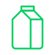

식품 100g당 단백질 함량
식물성 단백질
| 식품군 | 식품명 | 단백질(g) | kcal |
|---|---|---|---|
| 곡류 | 백미밥 | 3 | 152 |
| 현미밥 | 3.3 | 167 | |
| 오트밀 | 13.2 | 382 | |
|
메밀 국수 (삶은것) |
4.28 | 114 | |
|
찰 옥수수 (삶은것) |
4.22 | 140 | |
| 두류 |
강낭콩 (삶은것) |
8.46 | 170 |
|
서리태 (삶은것) |
19.02 | 196 | |
| 채소류 |
브로콜리 (삶은것) |
3.5 | 27 |
|
zpdlf (생것) |
3.5 | 27 | |
|
콩나물 (삶은것) |
4.52 | 33 | |
|
시금치 (데친것) |
3.4 | 23 | |
|
느타리버섯 (데친컷) |
3.26 | 21 | |
| 견과류 |
밤 (삶은것) |
3.45 | 154 |
|
땅콩 (삶은것) |
13.5 | 318 | |
|
아몬드 (볶은것) |
23.45 | 594 |
동물성 단백질
| 식품군 | 식품명 | 단백질(g) | kcal |
|---|---|---|---|
| 육류 |
닭고기 (삶은것,살코기) |
27.8 | 143 |
|
오리고기 (생것,껍질포함) |
16.63 | 242 | |
|
돼지 목심 (구운것) |
24.06 | 258 | |
|
돼지 삼겹살 (구운것) |
22.78 | 469 | |
|
한우 안심 (생것,1등급) |
19.17 | 200 | |
|
한우 꽃등심 (생것,1등급) |
17.76 | 326 | |
| 난류 |
삶은 달걀 |
13.94 | 143 |
|
삶은 메추리알 |
12.48 | 155 | |
| 어패류 외 |
광어 (생것) |
22.36 | 125 |
|
오징어 (생것) |
18.84 | 94 | |
|
새우-대하 (생것) |
18.1 | 83 | |
|

우유 및 유제품류 |
저지방우유 | 3.43 | 42 |
| (떠먹는)요구르트, 플레인 | 5.18 | 89 | |
| 모짜렐라 치즈 | 28.02 | 294 | |
| 체다 치즈 | 18.76 | 298 |
출처: 국가표준식품성분표(9개정판)